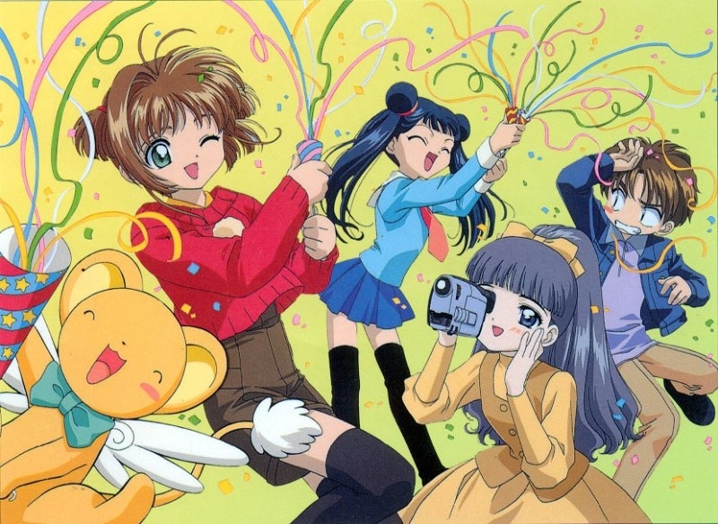

About Sakura
Sakura Kinomoto is a 10 y.o. gradeschooler who by a mere accident gained the power to use magical Clow Cards . Sakura is doing her best to gather all of the scattered cards with the help of her friends. She is very athletic and kind but kinda silly.
Sakura and her friends
Sakura's Characteristics
- She's a part of the cheerleader club.
- She gets shy whenever someone compliments her.
- She's NOT a monster although Toya would argue otherwise.
Sakura's Friends
Sakura has made many friends during her journey of being a Cardcaptor and the list would be neverending if we wanted to get to know of them, so let's focus on the ones playing the biggest part in her life.